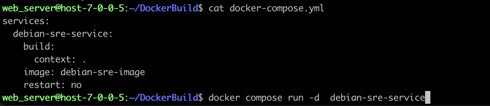

概述
- 本篇总结 Dockerfile 的最佳实践
一 写 Dockerfile 的建议
- 要使用 tag，但不要 latest。
- Debian 挺好的，不要总 Ubuntu。
- apt-get update 在前，rm -rf /var/lib/apt/lists/* 在后。
- yum install，不忘 yum clean。
- 多 RUN 要合并，来减少层数。
- 无用的软件，不要乱安装。
- COPY 放最后，缓存很开心。
- 善用 dockerignore，不浪费传输。
- 不忘 MAINTAINER，这都是我的。
详细小建议：
1、 Use absolute WORKDIR.
Problematic code:
FROM busybox
WORKDIR usr/src/app
Correct code:
FROM busybox
WORKDIR /usr/src/app
2、 Use WORKDIR to switch to a directory.
Problematic code:
FROM busybox
RUN cd /usr/src/app && git clone git@github.com:lukasmartinelli/hadolint.git
Correct code:
FROM busybox
RUN git clone git@github.com:lukasmartinelli/hadolint.git /usr/src/app
3、 Do not use sudo as it leads to unpredictable behavior. Use a tool like gosu to enforce root.
Problematic code:
FROM busybox
RUN sudo apt-get install
Correct code:
FROM busybox
RUN apt-get install
4、 Do not use apt-get upgrade or dist-upgrade. Problematic code:
FROM debian
RUN apt-get update && apt-get upgrade
Correct code:
FROM debian
RUN apt-get update
5、Using latest is prone to errors if the image will ever update. Pin the version explicitly to a release tag.
Problematic code:
FROM debian:latest or FROM debian
Correct code:
FROM debian:jessie
6、 Pin versions in apt get install. 并且要带 -y 参数， pip 也一样。
Problematic code:
FROM busybox
RUN apt-get install python
Correct code:
FROM busybox
RUN apt-get install -y python=2.7
7、Delete the apt-get lists after installing something.
Problematic code:
RUN apt-get update && apt-get install -y python
Correct code:
RUN apt-get update && apt-get install -y python \
&& apt-get clean \
&& rm -rf /var/lib/apt/lists/*
8、Use ADD for extracting archives into an image.
9、Valid UNIX ports range from 0 to 65535.
10、Provide an email adress or URL as maintainer.
11、Use COPY instead of ADD for files and folders.
12、Specify a maintainer of the Dockerfile. 并 写明联系方式
二 RUN 命令
RUN 指令是用来执行命令行命令的。由于命令行的强大能力，RUN 指令在定制镜像时是最常用的指令之一。其格式有两种：
-
shell 格式：RUN <命令>，就像直接在命令行中输入的命令一样。刚才写的 Dockerfile 中的 RUN 指令就是这种格式。
RUN echo '<h1>Hello, Docker!</h1>' > /usr/share/nginx/html/index.html -
exec 格式：RUN ["可执行文件", "参数 1", "参数 2"]，这更像是函数调用中的格式。
既然 RUN 就像 Shell 脚本一样可以执行命令，那么我们是否就可以像 Shell 脚本一样把每个命令对应一个 RUN 呢？比如这样：
FROM debian:stretch
RUN apt-get update
RUN apt-get install -y gcc libc6-dev make wget
RUN wget -O redis.tar.gz "http://download.redis.io/releases/redis-5.0.3.tar.gz"
RUN mkdir -p /usr/src/redis
RUN tar -xzf redis.tar.gz -C /usr/src/redis --strip-components=1
RUN make -C /usr/src/redis
RUN make -C /usr/src/redis install
之前说过，Dockerfile 中每一个指令都会建立一层，RUN 也不例外。每一个 RUN 的行为，就和刚才我们手工建立镜像的过程一样：新建立一层，在其上执行这些命令，执行结束后，commit 这一层的修改，构成新的镜像。
而上面的这种写法，创建了 7 层镜像。这是完全没有意义的，而且很多运行时不需要的东西，都被装进了镜像里，比如编译环境、更新的软件包等等。结果就是产生非常臃肿、非常多层的镜像，不仅仅增加了构建部署的时间，也很容易出错。 这是很多初学 Docker 的人常犯的一个错误。
Union FS 是有最大层数限制的，比如 AUFS，曾经是最大不得超过 42 层，现在是不得超过 127 层。
上面的 Dockerfile 正确的写法应该是这样：
FROM debian:stretch
RUN buildDeps='gcc libc6-dev make wget' \
&& apt-get update \
&& apt-get install -y $buildDeps \
&& wget -O redis.tar.gz "http://download.redis.io/releases/redis-5.0.3.tar.gz" \
&& mkdir -p /usr/src/redis \
&& tar -xzf redis.tar.gz -C /usr/src/redis --strip-components=1 \
&& make -C /usr/src/redis \
&& make -C /usr/src/redis install \
&& rm -rf /var/lib/apt/lists/* \
&& rm redis.tar.gz \
&& rm -r /usr/src/redis \
&& apt-get purge -y --auto-remove $buildDeps
首先，之前所有的命令只有一个目的，就是编译、安装 redis 可执行文件。因此没有必要建立很多层，这只是一层的事情。因此，这里没有使用很多个 RUN 对一一对应不同的命令，而是仅仅使用一个 RUN 指令，并使用 && 将各个所需命令串联起来。将之前的 7 层，简化为了 1 层。在撰写 Dockerfile 的时候，要经常提醒自己，这并不是在写 Shell 脚本，而是在定义每一层该如何构建。
并且，这里为了格式化还进行了换行。Dockerfile 支持 Shell 类的行尾添加 \ 的命令换行方式，以及行首 # 进行注释的格式。良好的格式，比如换行、缩进、注释等，会让维护、排障更为容易，这是一个比较好的习惯。
此外，还可以看到这一组命令的最后添加了清理工作的命令，删除了为了编译构建所需要的软件，清理了所有下载、展开的文件，并且还清理了 apt 缓存文件。这是很重要的一步，我们之前说过，镜像是多层存储，每一层的东西并不会在下一层被删除，会一直跟随着镜像。因此镜像构建时，一定要确保每一层只添加真正需要添加的东西，任何无关的东西都应该清理掉。
很多人制作出了很臃肿的镜像的原因之一，就是忘记了每一层构建的最后一定要清理掉无关文件。
三 关于容器内的 1 号进程
- 如果是单进程容器, 则直接使用业务进程作为 1 号进程, 例如 uwsgi 进程、tomcat 进程
- 如果是胖容器, 则建议使用tini作为容器内 1 号进程. tini 的优势:
-
- tini 可以避免应用程序生成僵尸进程
-
- tini 可以处理 Docker 进程中运行的程序的信号，例如，通过 Tini， SIGTERM 可以终止进程，不需要你明确安装一个信号处理器
- tini下载安装, 64位Linux使用tini-amd64这个
四 如何使用 Containerd 打包镜像
使用 containerd 打包镜像
通过以下命令使用 containerd 打包镜像：
containerd ctr build -t my-image .
此命令将使用当前目录下的 Dockerfile 构建镜像，并将其标记为 my-image。如果您希望使用其他的 Dockerfile 文件，可以使用 -f 选项指定其路径。
在打包镜像的过程中，containerd 会将镜像构建过程拆分为多个步骤，并对每个步骤进行缓存，以便后续使用。
查看已打包的镜像
您可以使用以下命令来查看已打包的镜像列表：
containerd ctr images list
此命令将显示出所有已打包的镜像，并包含其名称、标签、大小等信息。
五 docker-compose使用
1 docker-compose基础使用
- 在debian虚拟机上安装docker-compose
curl -sS https://download.docker.com/linux/debian/gpg | gpg --dearmor > /usr/share/keyrings/docker-ce.gpg
echo "deb [arch=$(dpkg --print-architecture) signed-by=/usr/share/keyrings/docker-ce.gpg] https://mirrors.tuna.tsinghua.edu.cn/docker-ce/linux/debian $(lsb_release -sc) stable" > /etc/apt/sources.list.d/docker.list
apt install docker-ce docker-ce-cli containerd.io docker-compose-plugin
-
在debian虚拟机上使用
-
- 先定义好一些service
-
- 
-
- 直接使用docker compose run 指定service（比如debian-sre-service）, -d 是后台运行, 会自动进行build
-

2 构建一个基础的Debian镜像
- 在debian虚拟机上构建一个基础Debian镜像，可运行python、supervisor、nginx等
-
安装docker,
curl -fsSL https://get.docker.com | bash -s docker --mirror Aliyun -
1 提前准备
web_server@host-7-0-0-5:~/DockerBuild$ ls
Dockerfile files
web_server@host-7-0-0-5:~/DockerBuild$ cd files
web_server@host-7-0-0-5:~/DockerBuild/files$ wget 'https://github.com/krallin/tini/releases/download/v0.19.0/tini-amd64'
web_server@host-7-0-0-5:~/DockerBuild$ ls files/
app.py entry.sh tini
- 2 Dockerfile
# 使用 Debian 稳定版作为基础镜像
FROM debian:stable-slim
# 设置环境变量
ENV DEBIAN_FRONTEND=noninteractive \
TERM=xterm-256color
# 安装基础工具和 SRE 常用工具
RUN apt-get update && apt-get install -y --no-install-recommends \
# 基础工具
ca-certificates \
curl \
wget \
gnupg \
apt-transport-https \
software-properties-common \
# 网络诊断工具
iputils-ping \
dnsutils \
net-tools \
traceroute \
tcpdump \
# 系统工具
procps \
htop \
iotop \
iftop \
strace \
ltrace \
lsof \
jq \
vim-tiny \
less \
# 安全工具
openssl \
ca-certificates \
# 日志工具
logrotate \
# 时间同步
ntpdate \
&& rm -rf /var/lib/apt/lists/*
# 安装常用监控/运维工具（可选）
# RUN apt-get update && apt-get install -y --no-install-recommends \
# prometheus-node-exporter \
# telegraf \
# && rm -rf /var/lib/apt/lists/*
# 清理缓存
RUN apt-get clean && \
rm -rf /var/lib/apt/lists/* /tmp/* /var/tmp/*
ADD files/tini /root/tini
ADD files/app.py /root/app.py
ADD files/entry.sh /root/entry.sh
RUN chmod +x /root/tini && chmod +x /root/entry.sh
# 设置工作目录
# 默认启动命令（可根据需要覆盖）
ENTRYPOINT ["/root/tini", "--", "/root/entry.sh"]
六 docker iptables规则详解
# Generated by iptables-save v1.8.9 (nf_tables) on Fri Jun 20 20:10:10 2025
*filter
:INPUT ACCEPT [0:0]
:FORWARD ACCEPT [0:0]
:OUTPUT ACCEPT [0:0]
:DOCKER - [0:0]
:DOCKER-BRIDGE - [0:0]
:DOCKER-CT - [0:0]
:DOCKER-FORWARD - [0:0]
:DOCKER-ISOLATION-STAGE-1 - [0:0]
:DOCKER-ISOLATION-STAGE-2 - [0:0]
:DOCKER-USER - [0:0]
-A FORWARD -j DOCKER-USER
-A FORWARD -j DOCKER-FORWARD
-A DOCKER ! -i docker0 -o docker0 -j DROP
-A DOCKER-BRIDGE -o docker0 -j DOCKER
-A DOCKER-CT -o docker0 -m conntrack --ctstate RELATED,ESTABLISHED -j ACCEPT
-A DOCKER-FORWARD -j DOCKER-CT
-A DOCKER-FORWARD -j DOCKER-ISOLATION-STAGE-1
-A DOCKER-FORWARD -j DOCKER-BRIDGE
-A DOCKER-FORWARD -i docker0 -j ACCEPT
-A DOCKER-ISOLATION-STAGE-1 -i docker0 ! -o docker0 -j DOCKER-ISOLATION-STAGE-2
-A DOCKER-ISOLATION-STAGE-2 -o docker0 -j DROP
COMMIT
# Completed on Fri Jun 20 20:10:10 2025
# Generated by iptables-save v1.8.9 (nf_tables) on Fri Jun 20 20:10:10 2025
*nat
:PREROUTING ACCEPT [0:0]
:INPUT ACCEPT [0:0]
:OUTPUT ACCEPT [0:0]
:POSTROUTING ACCEPT [0:0]
:DOCKER - [0:0]
-A PREROUTING -m addrtype --dst-type LOCAL -j DOCKER
-A OUTPUT ! -d 127.0.0.0/8 -m addrtype --dst-type LOCAL -j DOCKER
-A POSTROUTING -s 172.17.0.0/16 ! -o docker0 -j MASQUERADE
-A DOCKER -i docker0 -j RETURN
COMMIT
# Completed on Fri Jun 20 20:10:10 2025